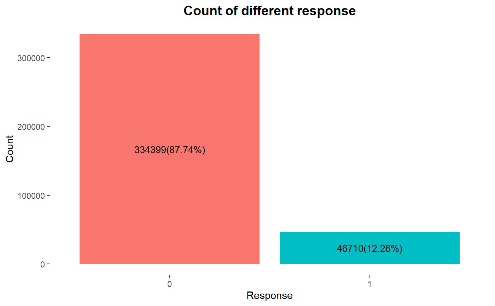

Title here
Source
Github PageCode
Introduction
Data Visualization
|
There are 87.74% of customers who are not interested in vehicle insurance and 12.26% who are interested. If we simply predict all clients as interested, we should expect the prediction accuray around 12%. Thus, this proportion will be used as the benchmark to evaluate model performance. |

Number of missing values in each feature
|
|
Distribution of age of clients
|
Drivers aged above 70 should be consider as high-age drivers which are highlighted in the graph. High-aged drivers have significantly higher risks than other drivers, so the insurance company should pay attention to this group of clients. |
The following visualizations are not closely related to our analysis. They are provided as supplementary materials, so readers can make their own conclusions based on these visualizations.
|
Number of gender by response
|
Number of cars at different ages by response
|
|
Number of cars if previously damaged by response
|
Distribution of days that customer has been associated with the company
|
|
Distribution of annual premium by age
|
Data Preprocessing
Data Cleaning
The dataset doesn't contain missing values and error values, so data cleaning is not necessary for the dataset.
Feature Engineering
We apply ordinal encoding on categorical features which maps each unique label to an integer value. The details of ordinal encoding are shown below:
Gender: Female ~ 0, Male ~ 1
Vehicle_Damage: No ~ 0, Yes ~ 1
Vehicle_Age: "< 1 Year" ~ 0, "1-2 Year" ~ 1, "> 2 Years" ~ 2
The dataset after feature transformation is shown below.
After feature transformation, all variables contain numeric values. Thus, we are able to produce a correlation heatmap as shown below.
|
- Age ~ Vehicle_Age, 0.77: |
Correlation heatmap
|
Model Training
In the project, we choose logistic regression and random forest models to predict health insurance owners' interest.
Logistic Regression
First, we use all variables to train a logistic regression model. The model summary shows that variables Region_Code and Vintage are insignificant.
The AUC score of the model is 0.832
We use the intersection of sensitivity (true positive rate) and specificity (true negative rate) as the best cutoff.
The confusion matrix of the model is shown below.
Then, we remove insignificant variables Region_Code and Vintage to train another logistic regression model. All variables in the new model are significant.
The AUC score of the model is 0.832.
We use the intersection of sensitivity (true positive rate) and specificity (true negative rate) as the best cutoff.
The confusion matrix of the model is shown below. This model has slightly better result than the previous one. This means we can achieve better result using a simpler model.
Random Forest
| We perform parameter tuning for random forest model. We use ntree=200 and try mtry from 2 to 10. Results of each parameter combination is shown in the table. The random forest using ntree = 200 and mtry = 10 has the best prediction accuracy. |
Random forest tuning results
|
The confusion matrix of the model is shown below.
Result Analysis
In this section we evaluate model results and choose the best model. We also make reccomendations for the insurance company based on results.
|
Model results
|
Feature importance ranking by the best model
|
Logistic regression using only significant variables has the highest accuracy of predicting clients' interest in vehicle insurance, so it is considered as the best model. The feature importance ranking is calculated based on the best model. The top two important features are: Vehicle_Damage and Vehicle_Age.
Based on machine learning results and feature importance, we make the following reccomendations to the insurance company:
1. Use logistic regression using only significant variables to predict clients' interest in vehicle insurance.
2. Company's marketing strategies should focus on clients who don't damage cars previsouly and have old cars. It's worth noting that most of clients who damaged cars previously are interested in the vehicle insurance. However, giving insurance to these drivers may enourage them to take risky behviors again. Thus, to avoid moral hazard, we don't reccomend the company to consider them as target clients.